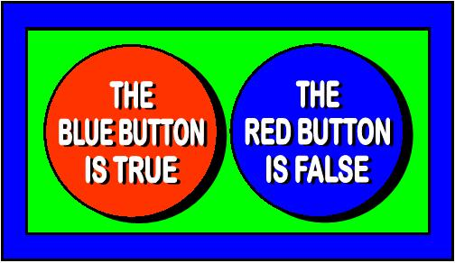

Dialetheic Logic

- Paraconsistency
- The world is full of contradictions
- A paraconsistent logic does not derive everything
from contradictory axioms.
- A dialetheic logic
- Three-valued logic - formulae are
true (T) xor
false (F) xor
both (B)
- Is paraconsistent
- ⟦φ⟧ = TV means that φ has the truth
value TV (T or B or F)
- Examples
- "This sentence is false"
- Russell's Paradox
- A belief system can be a religion and not a religion
- Actions can be both legal and illegal
- Interpretation
- Interpretation, models, and logical consequence as for
classical FOL
- The designated values are true (T)
and both (B)